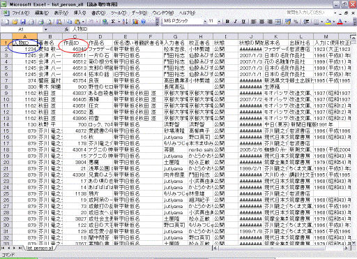

青空文庫早わかり
1999年8月1日 作成
2010年4月10日 修正 PDF 版を、ここからダウンロードできます。（PDF版は、2008年1月13日以降、更新していません。）
青空文庫へ、ようこそ！
青空文庫は、利用に対価を求めない、インターネット電子図書館です。
著作権の消滅した作品と、「自由に読んでもらってかまわない」とされたものを、テキストと XHTML（一部は HTML）形式でそろえています。
 作品ファイルは、縦組みを意識した統一した形式でまとめてあります。
作品ファイルは、縦組みを意識した統一した形式でまとめてあります。
いろいろな方が開発してくれた青空文庫対応の表示ソフトを利用すれば、本のページをめくるように、作品を読んでいけます。
多くの人に、快適に作品を味わい、自由にファイルを使ってもらうことは、この場を整えている私たちの願いです。
どうか青空文庫を、活用してください。
作品を読むには。
「入力ミスじゃないか？」と思ったときは、どうすればよいか。
縦組み、ページめくりで読みたいときは。
ファイルは、複製、再配布できるのか。
リンクの際の手続きは。
青空文庫の活動に参加したくなったら。
青空文庫メーリングリストに参加するには。
いろいろな機器やソフトで文庫の作品を味わいたいときは。
※雑誌や書籍などで青空文庫をご紹介くださる方に、お願いします。
・URL、画面キャプチャー付きで掲載していただく際も、ご報告や許諾を求めるご連絡はいりません。掲載誌も、お送りいただく必要はありません。
・野口英司編著「インターネット図書館 青空文庫」 （はる書房）には、誕生から今日に至る青空文庫の歩みと今後の課題が、包括的にまとめられています。「青空文庫の概要」から、参考となる情報にリンクしています。まずこれらをご覧いただいて、なお疑問が残れば、info@aozora.gr.jp にお問い合わせください。
サイトを選ぶ
青空文庫のメインサイトは、https://www.aozora.gr.jp/ です。
中味はまったく同じで、更新も同時に行っているミラーサイト（http://mirror.aozora.gr.jp/）を用意しています。
試してみて「速い」と感じる方を、ブックマークしてください。
片方がうまく繋がらない場合は、もう一方を試してください。
作品を読む
【どんな作品があるかを確認する】
トップページ右上の Google 検索窓で、目指す作品の有無を、手っ取り早く確認できます。
作家名からも探せます。
仮名でも、検索可能です。
「木曽路」、「御一新」といった、特定の語句を用いた作品も、ここで探せます。
トップページの「メインエリア」からたどれる「総合インデックス」では、すでに公開されている作品と、公開に向けて入力や校正が進んでいる作品のすべてを確認できます。
・「公開中の作品」
ここでは、すでに公開されている作品を、「作家別」「作品別」の双方から、探せます。
芥川竜之介の「鼻」を「作家別」から探すときは、まず、「総合インデックス」目次ページ、「公開中の作品」の「作家別」欄で、「あくたがわ」の「あ」をクリックします。
ア行の「作家リスト」が開きます。
姓の五十音順で並んでいる著者名をたどって、「芥川 竜之介」を見つけてください。（姓の五十音順が同じになるグループ内では、名の五十音順に並んでいます。）
ウェッブブラウザーの検索機能で、「芥川」と入れて探すことも可能です。
「総合インデックス」では、人物名は新字で表記します。
「芥川」は「龍之介」でなく「竜之介」で。
「みだれ髪」の歌人は、「與謝野晶子」ではなく、「与謝野晶子」で探してください。
「作家リスト」における、著者名と前に付く連番の対応は、固定的なものではありません。
新しい作家（名）が登録されると、五十音順に連番が振りなおされます。一つ割り込んで登録されると、それ以降は一つずつ、番号がふえます。
「芥川 竜之介」が見つかったら、著者名をクリックします。
芥川竜之介の「作家別作品リスト」が開きます。
芥川竜之介の「作家別作品リスト」で、冒頭の見出しに表示されている「No.879」の「879」は、この作家に割り振った、人物 ID です。
人物 ID は、原則として、将来にわたって変更しません。
「作家別作品リスト」の「公開中の作品」ブロックで、すでに公開されている作品を一覧できます。
一方「作業中の作品」ブロックでは、公開に向けて作業が進んでいる作品を確認できます。
「公開中の作品」、「作業中の作品」双方ではともに、五十音順で作品名が並んでいます。
ウェッブブラウザーの検索機能を使うか、五十音順で探していって、目指す作品（ここでは「鼻」）を見つけてください。
作品名と連番の対応も、固定的なものではありません。
目指す作品「鼻」は、「公開中の作品」ブロックで見つかるでしょう。
この作品は、すでに読める状態にあります。
見つかった作品名、「鼻」をクリックすると、「鼻」の「図書カード」が開きます。
「鼻」の「図書カード」で、冒頭の見出しに表示されている「No.42」の「42」は、この作品に割り振った、作品 ID です。
作品 ID は、複数の作品をまとめたものを、一つ一つ、切り分けて登録し直すといった特別な場合をのぞいて、将来にわたって変更しません。
「鼻」を「作品別」から探すときは、まず、「総合インデックス」目次ページ、「公開中の作品」の「作品別」欄で、「はな」の「は」をクリックします。
「作品一覧：ハ」が開きます。
ウェッブブラウザーの検索機能を使うか、五十音順で探していって、「鼻」を見つけてください。
「作品一覧」では、ウェッブブラウザーの1ページに、作品名が50件、表示されます。
次のページを開くときには、表の上と下にある「次の50件」、もしくは「ページ：1 2 3 …」の次の番号をクリックしてください。（ウェッブブラウザーのウインドウの横幅を狭く設定していると、「ページ：1 2 3 … 次の50件」が表示されないことがあります。見えないときは、ウインドウの横幅を広げるか、横方向にスクロールさせてください。）
見つかった作品名、「鼻」をクリックすると、鼻の「図書カード」が開きます。
「総合インデックス」目次ページからはさらに、「公開中の作品」、「作業中の作品」を網羅した、下の図のような、書誌データ付きの一覧表を入手できます。

ここからは、著者名、翻訳者名、底本名、底本の出版社名、新字旧字・新仮名旧仮名のいずれを用いた表記か、いつから公開されているか等のデータを得ることができます。
一覧表を引き落とす際は、まず「作家別」欄で「全てを表示」をクリックします。
開かれたページの冒頭にあって目に飛び込んでくる、「→「公開中 作家別作品一覧：全て(CSV形式、 zip圧縮）」をダウンロード 」をクリックすると、公開作品を網羅した一覧表を引き落とせます。
ZIP 圧縮されたファイルを解凍すると、表計算ソフトで開くように仕立てられた CSV 形式の一覧表（list_person_all.csv）が現れます。
Microsoft Excel等の表計算ソフトを用いれば、一覧表を上図のような形で開くことができます。
一覧表は、新しく作品が公開されるごとに、更新されます。
青空文庫では、毎日の公開を心がけてきたので、一覧表もここ数年来、毎日更新されてきました。
CSV 形式の一覧表（list_person_all.csv）に記載されている、人物IDと作品IDを組み合わせれば、公開済み作品の図書カードのURLを推定することができます。
図書カードのURLは、以下のように決めています。
https://www.aozora.gr.jp/cards/xxxxxx/cardyyyyy.html
xxxxxxは人物ID、先頭ゼロの6桁固定。
yyyyyは作品ID、先頭ゼロなし、桁数は不定。
例えば、愛知敬一（人物ID：1234）「ファラデーの伝」（作品ID：46340）の図書カードのURLは、以下のように決まります。
https://www.aozora.gr.jp/cards/001234/card46340.html
「作家別作品一覧」という名前が示すとおり、この表は、「作家別」の作品リストとしてつくりました。それゆえ、一つの作品に複数の著者がいる場合や、著者と翻訳者がいる場合には、人物ごとに、同じ作品名が重ねて記載されています。
試みに、「作家別作品一覧」を、作品IDをキーに、並べ替えてみてください。
作品ID「44」の「春の心臓」は、人物ID「879」の翻訳者「芥川 竜之介」と、「1085」の著者「イエイツ ウィリアム・バトラー」の双方に対応する形で、記載されています。
実際には図書カードは1枚しかつくられず、そのURLは一つであるにも関わらず、こうした構造ゆえに、「作家別作品一覧」からは、複数のURLが推定されるケースが生じます。（一つの作品に対して、著者と翻訳者が存在する場合、図書カードは著者の人物IDに対応する形で作られています。一つの作品に対して、複数の著者が存在する場合、図書カードは最も若い人物IDを持つ著者に対応する形で作られています。）
こうした問題を解消した上で、底本の親本や初出の情報、図書カードのURL等を盛り込んだ、より使い勝手の良い作品リストを提供することが必要であると考えています。
「総合インデックス」や「図書カード」に表示するデータの取り方を見直し、2004年10月、「青空文庫における書誌データのとりかた」をまとめました。
以降は、この方針に従い、過去のデータもこれに沿って修正しています。
・「作業中の作品」
同じ要領で、公開に向けて入力や校正が進んでいる作品を、「作家別」「作品別」双方から確認できます。
「作家別」から、「作業中の作品」を探す際には、「総合インデックス」目次ページ「作業中の作品」「作家別」欄、そこから開かれる「作家リスト」、さらにそこから開かれる「作家別作品リスト」で、作品名を確認できます。
どの底本を元に、誰がどこまで作業を進めているかといった詳細は、このページからリンクしている「作業中 作家別作品一覧」で見られます。
この一覧は、「作家別」に切り分けてありますが、作業中の作品を網羅した資料も、用意してあります。
「総合インデックス」目次ページの「作業中の作品」「作家別」欄で「全てを表示」をクリックしてください。
開かれたページの冒頭で、先ず目に飛び込んでくる、「→「作業中 作家別作品一覧：全て(CSV形式、 zip圧縮）」をダウンロード」をクリックすると、全作業中作品の一覧表を引き落とせます。
ZIP 圧縮されたファイルを解凍すると、CSV 形式の一覧表（list_inp_person_all.csv）が現れます。
一方、「総合インデックス」目次ページの「作業中」「作品別」欄からは、五十音順に作品名が並んだ詳細一覧を、直接開けます。
公開に向けて、入力や校正の作業がどこまで進んでいるかは、どの一覧表においても、「状態」欄で確認できます。
・「青空文庫 分野別リスト」
「総合インデックス」にリンクで組み込まれた「青空文庫 分野別リスト」では、日本十進分類法（NDC）にのっとって内容別に分類された一覧から、公開中の作品を探せます。
児童書に限定したリストも用意してあります。
「青空文庫 分野別リスト」は、しだひろしさん、Juki さん、あすなろさんによる分類データをもとに、おかもとさんによってまとめられ、維持されています。
・「随筆計画2000」
トップページの「青空文庫・別館」からは、「随筆計画2000」という、番外編の索引を開けます。
ここには、青空文庫に登録されている随筆作品が集められています。
著者名、作品名が青で表示されたものは、すでに青空文庫で公開されており、クリックによって「図書カード」を開けます。
「随筆計画2000」は、作品社の「日本の名随筆」シリーズをもとに、もりみつじゅんじさんによって作成、管理されています。
【ファイルを選ぶ】
作品を読むために必要なファイルは、「図書カード」から引き落とせます。
「図書カード」で「作品名」「著者名」の下に表示されている「いますぐXHTML版で読む」（もしくは「いますぐHTML版で読む」）をクリックすると、ウェッブブラウザーのウインドウに作品を表示させることができます。
青空文庫の XHTML 版に対応した「azur」というソフトを使えば、縦組みで、より快適に読めます。（ただし30 日間の試用期間後も継続して使用する場合は有料となります。）
ある作品に用意されたファイルの種類をすべて確認してから、引き落とすものを決めたいときは、「いますぐXHTML版で読む」の左の、「ファイルのダウンロード」をクリックしてください。
「ファイルのダウンロード」欄には、この作品に用意されている、すべての形式のファイルが並んでいます。
テキストは、もっとも基本的な形式のファイルです。
ワープロやエディターなど、さまざまなソフトで開けます。
Windows をお使いであれば、「smoopy」や「扉〜とびら〜」などを使えば、テキスト版も、縦組みで開けます。
青空文庫ファイルに対応した表示ソフトは、鈴木厚司さんによる「テキストビューワー」で一覧できます。
原則として、テキストファイルは zip 形式で圧縮してありますから、開く前には解凍の手続きが求められます。
ファイルの解凍に必要なソフトは、Windows であれば「+Lhaca」、Macintosh であれば「Stuffit Expander」などがあります。
詳しくは「●ファイルのダウンロード方法・解凍方法」を参照してください。
作品によっては、読みやすく処理した文字を縦に組んだ、エキスパンドブックや .book（ドットブック）が用意されています。
2002年3月までに公開した作品では、原則的に、双方のどちらかを作ってきました。
エキスパンドブックや .book などを開くためのソフト、圧縮されたテキストファイルを解凍するためのツールなどについては、「青空文庫読書ガイド」を参照してください。
入力ミスを指摘する
以下で紹介している、入力ミス指摘用の掲示板は、現在休止中です。
作品ファイルや図書カードにおかしいと思うところがあったら、reception@aozora.gr.jpに連絡してください。
連絡に先立って、可能であれば、ファイル末に記載してある底本に図書館等で当たってみてください。
「間違い」と思ったものが、作者特有の書き方だったり、かつては当たり前のものだったりすることは、しばしばです。
「やはり入力時のミスである」と確認できたものをご連絡いただけると、助かります。
作品を読んでいて、「おかしい。入力ミスじゃないか？」と思ったら、バグ取り掲示板「むしとりあみ」で指摘してください。
使い方は、「利用の手引き」に示してあります。（臨時休業にともない、一時的にリンクが切れています。）
ご連絡を受けて、あらためて底本を参照し、作業上の間違いであると確認できたら、ファイルを修正します。
訂正の作業は、数か月単位で、まとめて行います。
どこをどうなおしたかは、「訂正のお知らせ」で告知します。
私たちは、通りすがりの読者からの誤植の指摘を歓迎します。
ファイルを利用する
青空文庫には、作者の死後50年を経て著作権の消滅した作品と、著作権者が「タダで読んでもらってかまわない」と判断したものの、二種類がおさめられています。
著作権が消滅した作家の「作家別作品リスト」と「図書カード」は、青の地色で表示されます。


著作権が存続している作家の「作家別作品リスト」と「図書カード」は、ピンクの地色で表示されます。


（「青」「ピンク」は、モニターの色数設定によっては、異なった色合いとなることがあります。）
著作権存続の「作家別作品リスト」と「図書カード」には、「＊著作権存続＊ 作品の取り扱いについては「ファイル取り扱い規準」を御覧ください。」と注記されます。
著作権が消滅したもの、存続しているもの、それぞれのファイルをどんなふうに使えるかは、「青空文庫収録ファイルの取り扱い規準」に示しています。
ファイル形式の変更や、複製、再配布を検討される方は、必ずこの「規準」に目を通してください。
なお、翻訳された作品に関しては、訳者に独立した著作権が生じています。
大久保ゆうさん訳のアーサー・コナン・ドイル作品、長谷悟さん訳の『落窪物語』は共に、書いた人の権利は消滅していますが、訳した人の権利が生きています。
これらは、「著作権の存続している作品」に該当する点、注意してください。
「青空文庫収録ファイルの取り扱い規準」をはじめとする、文庫の運用に関わる約束事は、「基準」ではなく「規準」と位置づけています。
青空文庫の XHTML 版では、くの字点をのぞく JIS X 0213 の文字を画像で表示しています。
この画像ファイルは、有償、無償を問わず、自由に利用してください。
JIS X 0213 の画像ファイルは、jiskan16-2000 を元にした Habian を doodle で変換して作りました。
JIS X 0213:2004 で追加された10文字（1-14-1、1-15-94、1-47-52、1-47-94、1-84-7、1-94-90、1-94-91、1-94-92、1-94-93、1-94-94）は、含んでいません。
JIS X 0213 の文字を外字注記した青空文庫形式のテキスト版を、自動生成スクリプトで XHTML 版に変換し、所定の場所に置くと、画像が読み出せます。ちなみに青空文庫では、以下の階層構造をもつ files フォルダに、XHTML 版を置いています。
cards/author/files/xxxx.html
gaiji
zip 形式で圧縮した gaiji フォルダを、ここに置きます。（1,384,452 バイトあります。）
リンクする
青空文庫のページやファイルにリンクする際は、「青空文庫へのリンク規準」に従ってください。
上記「規準」が示すとおり、「作家別作品リスト」、「図書カード」に直接リンクしてもらってもかまいません。
「作家別作品リスト」、「図書カード」の URL は、人物 ID、作品 ID によって決まります。
原則として、人物 ID、作品 ID は変更しません。
よって、特別のやむを得ない理由のある場合をのぞき、「作家別作品リスト」、「図書カード」の URL が変更されることはありません。
長谷川集平さんが、リンク用のバナーを作ってくれました。
どうぞ、ご利用ください。
・相互リンクを望まれる方へ
青空文庫が生まれてまもないころ、リンクを張って下さった方たちへの感謝の思いをこめて、「そちらからもリンクを張って欲しい」という御希望に、できる限りこたえるようにしていました。
その後も、相互リンクを希望される御連絡を、多数いただいてきました。
青空文庫への道筋を用意して下さるみなさんのお気持ちは、ありがたく頂戴します。
ただ、収録作品数が増えてくるにつれ、私たちは、ファイルを公開していく準備で手一杯となってしまいました。
リンク先のメンテナンスに費やす時間が、とれなくなっている状態です。
たいへん申し訳ありませんが、現在のところ、相互リンクの御希望に添うことはできかねます。
作品の公開を優先する事情について御理解頂き、何とぞ御了承下さい。
活動に参加する
入力、校正、ファイル作成などに力をふるってくれる皆さんを、青空文庫では「青空工作員」と呼んでいます。
文庫の世話役は、自らを「呼びかけ人」と称しています。
これらの人の働きによって、青空文庫はここまで育ってきました。
「自分も工作員として働いてみよう」と思われた方は、まず、「工作員を志願される皆さんへ」を参照してください。
青空文庫メーリングリストに参加する
青空文庫の作業を円滑に進めるために、工作員、呼びかけ人、作品を登録している〈青空作家〉、ファイルのフォーマット変換などを通じて利用の裾野を広げてくれる〈青空拡張員〉をメンバーとした、メーリングリストを設けています。
目的と進め方、参加手続きの詳細は、「青空文庫メーリングリストのしくみ」に示しています。
文庫を育てるために、自らの手を動かす皆さんの参加をお待ちしています。
自分の作品を登録する
青空文庫は、著作権の保護期間を過ぎた作品の電子化に加えて、「書き手自身が「対価を求めない」と決めた作品」の収録を目標に掲げて出発しました。
収録に向けた手続きは、「青空文庫への作品収録を望まれる方へ」に示し、対応の実務は、呼びかけ人グループが担当してきました。
しかし、著作権切れ作品の電子化の作業が、幅広い人達の協力を得て大きく膨らんでいく一方、収録規準に照らした作品の「評価」に、時に難渋する中で、呼びかけ人はしだいに、この作業に、大きな困難を感じるようになりました。
現在では、著作権有効な作品の登録は、実質的に休止状態にあります。
今後、この目標にどう取り組むべきか、著作権有効な作品の登録をいったん停止する旨、宣言することも含めて、検討していきたいと考えています。
新しい動きをつかむ
最新の登録作品は、トップページ「お知らせ」の「最新公開作品」欄で確認できます。
その年に公開された作品は、「お知らせ」の「新着情報」に網羅しています。
青空文庫の新しい動きは、「そらもよう」で報告します。
過去の流れをつかむ
青空文庫の初心は、「青空文庫の提案」に示しています。
青空文庫の準備段階から書き続けた「そらもよう」には、2002年8月まで、新着情報と活動報告の双方を盛り込んでいました。
「そらもよう」の最下段に示した「1997年のそらもよう」以降をクリックして開くと、これまでの青空文庫の歩みを確認できます。
前年、以前に公開された作品は、https://www.aozora.gr.jp/index_pages/whatsnew_yyyy_1.html の yyyy に、西暦を入れた URL で確認できます。
2005年分であれば、以下のとおりです。
https://www.aozora.gr.jp/index_pages/whatsnew_2005_1.html
青空文庫の活動の中で、私たちは何度か困難な問題に直面し、大きな誤りも犯しました。
「直面した課題」には、その際にまとめた報告を置いています。
青空文庫をめぐるお金の流れは、「会計報告」に示しています。
話し合いに加わる
「こもれび」は、hongming さんが用意してくれた、誰でも書き込める掲示板です。
「留意事項」を確認の上、活用してください。
ag さんの「aozora blog」では、さまざまな執筆者によって、さまざまな話題が提供されています。（現在休止中です。）
話題の設定（エントリー）は、権限を与えられた人にしかできませんが、コメントは誰でも書き込めます。
ゼファー生さんの「みんなの輪」には、登録ユーザーが発言できる、「談話室」が用意されています。
「みんなのテキスト」「みんなのファイル」には、青空文庫にない作品が置かれています。
「読書blog―すいへいせん」では、青空文庫の収録作品が、blog 形式で毎日紹介されています。
作品紹介へのコメントは、誰にでも付けられます。
青空文庫を検索する
トップページ上に用意した検索ウインドウから、青空文庫全体を Google で検索できます。
su-ki-da さんによる「青空文庫全文検索」では、作品ファイル、図書カード、作品リストを、条件を設定して検索することが可能です。
その日更新されたすべてのファイルの情報を、RSS で提供する実験も行われています。
ゼファー生さんによる「青空鯰」では、Namazu による、収録作品の全文検索が可能です。
もりみつじゅんじさんによる「青空文庫検索ページ」では、各種の検索エンジンを使った検索が可能です。
青空文庫についてもっと知る
「青空文庫の全体像を、まとめて知りたい」と思われる方には、以下の書籍をお薦めします。
青空文庫の言い出しっぺである野口英司さんがまとめた「インターネット図書館 青空文庫」 （はる書房）には、誕生から今日に至るまでの歩みと今後の課題が、包括的にまとめられています。
この本には、2005年9月19日時点での著作権切れ収録作品を収めた、DVD-ROM が付いています。
Amazon でのご注文は、こちらから。
2007年秋から、全国の公共図書館、大学、短大、高専付属図書館、高等学校図書館等に寄贈した「青空文庫 全」には、青空文庫10年の歩みや、著作権保護期間の延長に反対する考えを盛り込んだ他、2007年10月1日時点での著作権切れ作品を収めた、DVD-ROMを組み込みました。
DVD-ROMには、青空文庫の公開サイトでは得られない、解凍済みのテキスト版を作家別のフォルダーにまとめた「おまけ」も付いています。
「青空文庫 全」は、最寄りの図書館で借りてください。
「青空文庫 全」の本文とDVD-ROMは、自由にコピーしてください。
「青空文庫へようこそ インターネット公共図書館の試み」は、呼びかけ人の八巻美惠さんと、LUNA CAT さんが編集作業に携わり、工作員の皆さんのご協力も得て、1999年11月にスタートしたオン・デマンド出版の実験、「HONCO on demand」の一環として刊行されました。
この本については、こちらでご紹介しています。
Amazon でのご注文は、こちらから。
青空文庫にない作品を探す
著作権の切れた作品を電子化し、公開しているのは青空文庫だけではありません。
「電子テキストのある場所」では、電子テキストを公開しているさまざまなサイトを紹介しています。
いろいろなところで公開されている作品を網羅した、統合索引を作る試みが進んでいます。
当初青空文庫でも、統合索引の整備を狙って「電子テキストのある場所」を用意しましたが、新しい内容を盛り込んで更新していく作業を怠っています。
どこにどんな作品があるか、確認したいときは、幅広く視野をとった上で迅速に更新し続けておられる、次のサイトを参照することをお薦めします。
「電子化された日本語テキスト」（明星大学、柴田雅生さん）
「日本文学関係テキストファイル等（作品別・五十音順）」（甲南女子大学、菊池真一さん）
「電子図書館 」（書籍デジタル化委員会）
いろいろな形で作品を味わう
一つのファイルを、いろいろな形、さまざまな装置で味わえることは、電子テキストの大きな魅力です。
「電子テキストの読み方」では、電子テキストを読むために用意された、さまざまなソフトウエアを紹介しています。（内容が古くなっています。新しい情報を盛り込んだ、鈴木厚司さんの「テキストビューワー」を、合わせて参照してください。）
大久保ゆうさんによる「音声化された青空文庫リンク集」では、青空文庫のテキストを使って、 音声化された作品を扱うページが紹介されています。
hongming さんの「一太郎で「青空文庫」」には、プリントアウトして作品を読めるよう、ルビや傍点などを処理した一太郎の形式で、作品ファイルが用意されています。
携帯型の情報機器で、青空文庫のファイルを読もうとする試みが広がっています。
「TEXT の読み方」に、携帯機器の利用に関する情報をまとめています。（内容が古くなっています。鈴木厚司さんの「テキストビューワー」をどうぞ。）
個別の機器に対応した、以下のページでも、さまざまな情報が提供されています。
Palm/Pilot（WorkPad）
「二代目てのり文庫」
Newton
「Quiet Press」の「Newton Book」
携帯電話
「携帯書房」iアプリ、縦書きで読む。
「i-文庫」
「モブンコ」
この文書に注文を出す
この文書に分かりにくいと感じる点があったら、info@aozora.gr.jp 宛のメールで、ご指摘ください。
「こうした要素についても、説明して欲しい」、「こんな関連情報を盛り込んで欲しい」といった注文も、お待ちしています。
本文書への注文に限らず、青空文庫の呼びかけ人に連絡を取りたいときには、info@aozora.gr.jp 宛にメールを送ってください。
トップページに戻る。